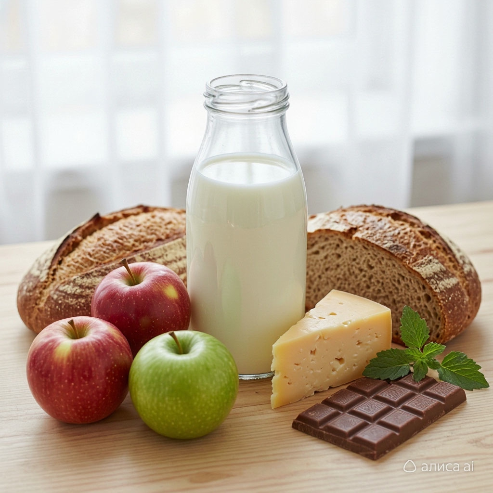

О магазине «Перекрёсток»
«Перекрёсток» — современный супермаркет и интернет-магазин продуктов. Мы объединяем строгий контроль свежести, удобный онлайн-каталог и быструю доставку до двери.
Перейти в каталог
Наши преимущества
-
Ежедневные поставки
Свежие молочные продукты, горячий хлеб, сезонные овощи и фрукты поступают на полки магазина каждое утро напрямую от проверенных фермерских хозяйств и производителей.
-
Контроль качества
Мы строго следим за температурным режимом хранения и сроками годности каждой партии, чтобы вы получали только безопасные и натуральные продукты.
-
Удобный сервис
Оформить заказ на сайте можно за пару минут: выберите нужные позиции в каталоге, укажите удобное время и получите покупки с курьером или самовывозом.
Цифры и стандарты работы
| Показатель | Значение |
|---|---|
| Ассортимент товаров | Более 5 000 наименований свежих продуктов и товаров для дома |
| Поставщики | Свыше 120 локальных фермерских хозяйств и крупных брендов |
| Время сборки заказа | От 20 минут с проверкой сроков годности каждого товара |
| География доставки | Москва и ближайшее Подмосковье без выходных |
Часто задаваемые вопросы
Как вы проверяете свежесть продуктов перед отправкой?
При сборке каждого заказа сотрудники магазина проверяют целостность упаковки и остаточный срок годности. Мы отбираем только те товары, у которых прошло не более половины установленного производителем срока хранения.
Можно ли оформить самовывоз из магазина?
Да, вы можете бесплатно забрать собранный заказ в нашем магазине по адресу г. Москва, пр-т Вернадского, д. 78. Заказ хранится в специальной зоне с соблюдением температурного режима в течение 24 часов.
Как связаться со службой поддержки покупателей?
Вы можете позвонить нам по единому номеру 8 (800) 200-95-55 ежедневно с 08:00 до 23:00 или написать на электронную почту. Наши специалисты оперативно помогут решить любой вопрос по заказу или возврату.